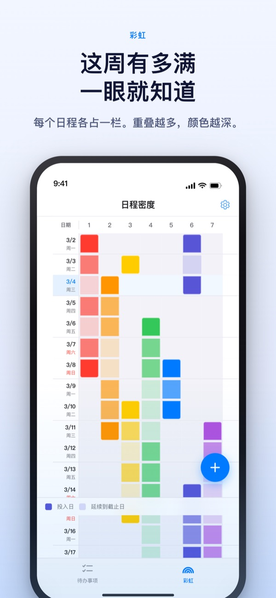
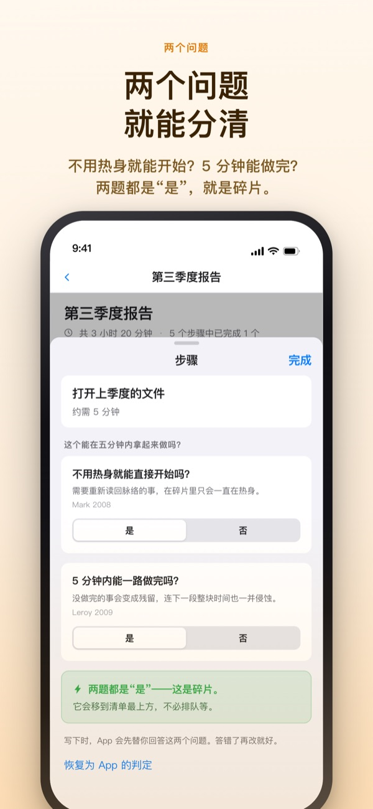
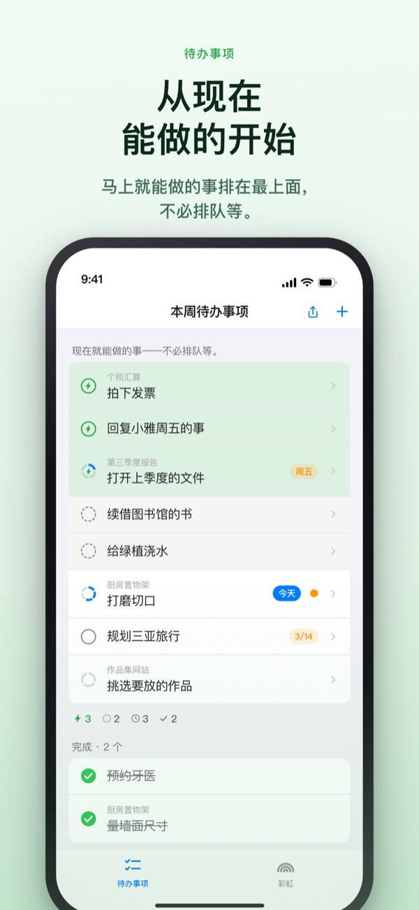
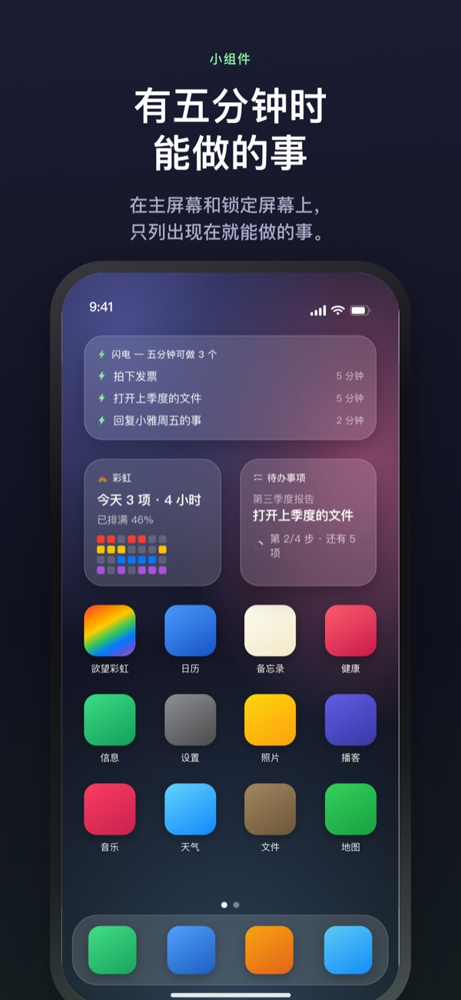

忙的那周提前看见，
空出的 5 分钟不再溜走
事情叠得越多，彩虹的颜色就越深。把大任务拆成步骤，等有了空档，马上能做的那一步已经在最上面等着。
彩虹、任务拆分、计时器以及与 Mac 同步均免费。

亲手分一分
“第三季度报告”已经拆成了五个步骤。选一个步骤，改改所需时间，或者把两个问题的答案翻过来试试。只有两个都答“是”的步骤，才是 5 分钟就能拿起来做的碎片。
日历看着挺空，这一周却让人喘不过气？
日历只告诉你有没有安排，不告诉你安排叠了多少层。三个截止日期挤在同一周，往往要走进那一周才发现；中间冒出来的 5 分钟，也在翻待办清单时悄悄过去。欲望彩虹把一周画成格子，叠得越多颜色越深，还替你把空档里能做的事单独挑出来。
两个问题就能分清
把大任务拆成步骤后，每一步只问两件事：不用热身就能直接开始吗？5 分钟内能一口气做完吗？
两个都答“是”的才是碎片。答案由 App 根据时间和写下的字先填好，你只在它判断错时翻过来。

有空档时，只看最上面
把待办向右滑，加上闪电，它就会插到最上面。不用读完整张清单，现在能做的就在那里。
步骤之间要不要互相等待，每组只定一次。按顺序时，排在前面的是还没做完的第一步；不限顺序时，排在前面的是现在就能拿起的碎片。

不打开 App 也看得见
计时器一直数到日程结束的时刻，剩余时间在灵动岛和锁定屏幕上也能看到。
主屏幕与锁定屏幕小组件会显示正在做的事、5 分钟能做的事，以及本周的彩虹。（小组件属于 Pro）

三步就能开始
- 1
画出日程
长按开始那天的空格，再点一下结束那天，彩虹上就多了一条线。
- 2
把大任务拆开
点开待办写下步骤，选好时间即可，两个问题的答案 App 会先填上。
- 3
有空就看最上面
碎片和带闪电的事项不用排队，都聚在最上面。
屏幕上会看到的词
- 深色格 · 浅色格
- 真正动手的日子，以及到结束日为止剩下的期间
- 一行格子都满了
- 同时推进的事太多，一件延误整天都会被拖后的日子
- 碎片
- 两个问题都答“是”，空出 5 分钟就能做的步骤
- 短整块
- 不用热身，但碎片时间里做不完的步骤，坐下来一次做完
- 整块
- 需要热身或超过 45 分钟的步骤，放到预留好的时间里
- 闪电
- 你自己加的“马上做”标记，会插到最上面
- 按顺序 · 不限顺序
- 步骤之间是否互相等待，每组定一次
- 账本
- 一周的结算：剩下的、找回的时间、喘口气的时间，各记各的，不相加
时间从下往上累加，大任务的时间就是各步骤时间之和。
过好今天需要的，都免费
免费
- 彩虹（日程密度格子）
- 任务拆分与两个问题
- 闪电、步骤顺序
- 计时器（灵动岛 · 锁定屏幕）
- 通过 iCloud 与 Mac App“彩虹工坊”同步
- 最近两周的账本
彩虹 Plus · 彩虹 Pro
- Plus：日程统计，两周以前的账本
- Pro：包含 Plus 全部内容，外加主屏幕与锁定屏幕小组件
- Pro：从日历导入并持续映照
- Pro：日程共享（只读）
- Pro：Mac“彩虹工坊”Pro 一并解锁
均可选择年度订阅或一次性买断
收费的只有回顾过去几周和把内容带到 App 外面这两类。以前买过 Pro 或仍在月度订阅中的用户，现在依旧是 Pro。
常见问题
必须注册账号或登录 iCloud 吗？
一个人用不需要。无需注册，内容都存在设备里。想在其他设备或 Mac App 上同步，或使用共享功能，才需要登录 iCloud。
两个问题的答案判断错了。
点开步骤，把“是”和“否”换过来就行。你自己定的答案优先于 App 的判定。想交还给 App，点“恢复为 App 的判定”。没填时间的步骤无法判断能否在 5 分钟内做完，所以不算碎片。
能和别人一起看吗？
可以用邀请链接把自己的日程以只读方式共享（Pro），也可以和受邀的人一起读写同一份待办清单。拿到链接的人都能加入，请只发给要一起用的人。这与 Apple 家人共享无关。
日历 App 里的日程也会显示吗？
所选日历的日程会一起映照在彩虹和当天的画面上（Pro）。只读取，不会往日历里写任何东西。
能在小组件上打勾吗？
小组件只用来查看。点一下会直接打开待办画面，请在 App 里打勾。
Mac App 需要另外购买吗？
彩虹工坊是 Mac App Store 上单独的 macOS App。使用同一个 iCloud 账户时，待办和每周计划会自动同步，同步不收费。
以前写的待办还在吗？
在。待办、步骤和填好的时间都会保留。以前选过的开工条件标签，会由 App 按两个问题重新判定。
写下的内容存在哪里？
没有服务器。内容只在你的设备和你自己的 iCloud 里，开发者看不到。不使用广告标识符和位置信息，只发送无法识别个人的匿名使用统计，可在设置中关闭。
怎么取消订阅？
在“设置”App 的 Apple 账户 > 订阅中取消。若未在当期结束前至少 24 小时取消，将按相同价格自动续订。买断只需付款一次。
用着卡住了或发现哪里不对，请写信到 leeo@kakao.com。App 的设置里也有联系入口。